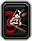
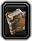
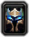
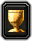

Tools & research

Talent calculator
Build, save, and share talents for all nine classes.


Spellbook
Spells and ranks for all nine classes.


Raid planner
Arrange groups and check buff and debuff coverage.

Feral simulator
Damage, gear comparisons, and rotation testing.


Feral community analysis
767 survey responses · September 20–21, 2026